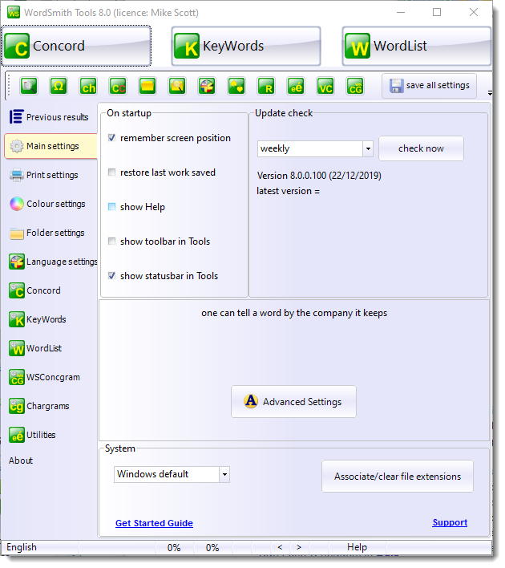
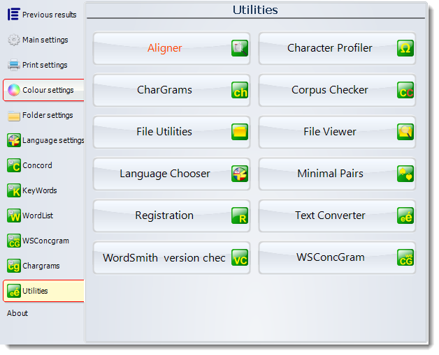
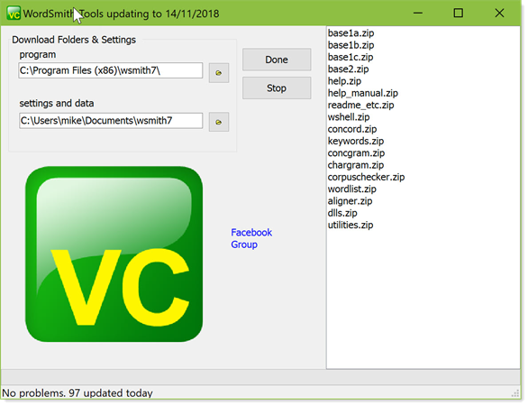
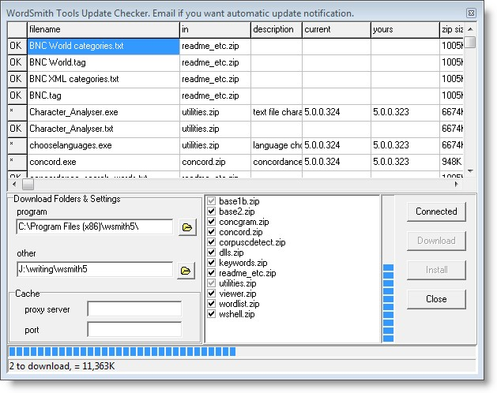

WordSmith Tools is an integrated suite of programs for looking at how words behave in texts. You will be able to use the tools to find out how words are used in your own texts, or those of others. The WordList tool lets you see a list of all the words or word-clusters in a text, set out in alphabetical or frequency order. The Concordancer, Concord, gives you a chance to see any word or phrase in context-so that you can see what sort of company it keeps. With KeyWords you can find the key words in a text. The tools have been used by Oxford University Press for their own lexicographic work in preparing dictionaries, by language teachers and students, and by researchers investigating language patterns in lots of different languages in many countries world-wide.
WordSmith Tools用于统计文本文字使用规范，查看文本中单词或词组的列表，并按字母顺序或频率顺序进行排列。Concordance功能查看单词及短语搭配。牛津大学出版社（Oxford University Press）词典编写使用该软件，同时，相关功能也供语言教师，学生及研究人员学习和研究，以了解不同语言模式。
Online step-by-step screenshots showing what WordSmith does.
This program controls the Tools. It is the one which shows and alters current defaults, handles the choosing of text files, and calls up the different Tools. It will appear at the top left corner of your screen. You can minimise it, if you feel the screen is getting cluttered.
Concord is a program which makes a concordance using plain text or web text files. To use it you will specify a search word, which Concord will seek in all the text files you have chosen. It will then present a concordance display, and give you access to information about collocates of the search word. Listings can be saved for later use, edited, printed, copied to your word-processor, or saved as text files.
The purpose of this program is to locate and identify key words in a given text. To do so, it compares the words in the text with a reference set of words usually taken from a large corpus of text. Any word which is found to be outstanding in its frequency in the text is considered "key". The key words are presented in order of outstandingness. The distribution of the key words can be plotted. Listings can be saved for later use, edited, printed, copied to your word-processor, or saved as text files. This program needs access to 2 or more word lists, which must be created first, using the Word List program.
WordList generates word lists based on one or more plain text or web text files. Word lists are shown both in alphabetical and frequency order. They can be saved for later use, edited, printed, copied to your word-processor, or saved as text files.
The program suite also contains a number of other programs for specific jobs. Start them using these buttons:
Aligner is a tool which enables you to produce a copy of a text file with numbered sentences or paragraphs and then align two or more versions of a text, showing alternate paragraphs or sentences of each.
Aligner is a tool which enables you to produce a copy of a text file with numbered sentences or paragraphs and then align two or more versions of a text, showing alternate paragraphs or sentences of each.
A tool to help find out which characters or chargrams are most frequent in a text or a set of texts. The purpose could be to check out which characters or character sequences are most frequent (e.g. in normal English text the letter E followed by T will be most frequent, THE and ARE will be high frequency 3-chargrams), or it could be to check whether your text collection contains any oddities, such as accented characters or curly apostrophes you weren't expecting.
A tool for selecting Languages which you want to process. You will probably only need to do this once, when you first use WordSmith Tools.
A tool to go through your corpus and seek out any text files which may have become corrupted. Works in any language. Also, tests for boilerplate text, file-duplication, relevance
Utilities to
A tool for viewing how your text files are formatted in great detail, character by character.
a program to find typos and minimally-differing pairs of words.
Text Converter is a general-purpose utility which you use for three main tasks: to edit your texts, to rename text files, to change file attributes, to move files into a new folder if they contain certain words or phrases.
The main use is to replace strings in text files. It does a "search and replace" much as in word-processors, but it can do this on lots of text files, one after the other. As it does so, it can also replace any number of strings, not just one.
It is very useful for going through large numbers of texts and re-formatting them as you prefer, e.g. taking out unnecessary spaces, ensuring only paragraphs have
A tool to check whether any components of your current version need updating and if so, download them for you. Accessed via the main Controller menu, File | Web version check. When you run the program you'll see something like this:
The various components of WordSmith are listed in the top window and the current version is compared with your present situation. If they are different, all the files in the relevant zip file will be starred (*) in the left margin. By default you will download to wherever WordSmith is already (the program in a program folder and settings etc. in a Documents folder) but you're free to choose somewhere else. Press Download if you wish to get the updated files.
After the download, the various .zip files are checked (bottom right window) if downloaded successfully, and the Install button is now available for use. Install unzips all those which are checked.
Aligner is a tool which enables you to produce a copy of a text file with numbered sentences or paragraphs and then align two or more versions of a text, showing alternate paragraphs or sentences of each.
A tool for generating concgrams.